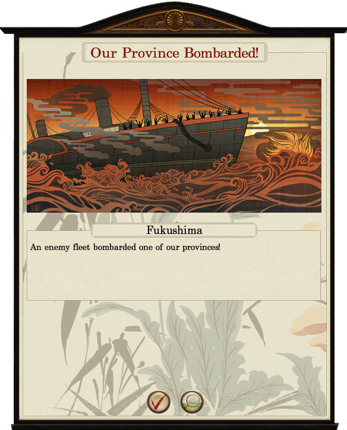

Naval Bombardment
In Fall of the Samurai, naval bombardment allows fleets to support our armies' actions by providing a direct artillery barrage during a land battle, or by weakening enemy armies and settlements on the campaign map prior to an attack. It will automatically occur if an army or city under siege is within our fleet's arc of fire or can be controlled manually by right-clicking on the target. Bombardment is not possible whilst a fleet is blockading a port or if docked at a port. If there is an enemy fleet at a port we wish to bombard, it is only possible to assault the port in the conventional manner.
Click here to view a video tutorial about this subject.